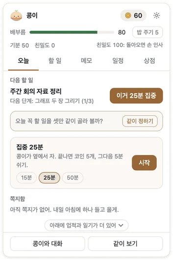
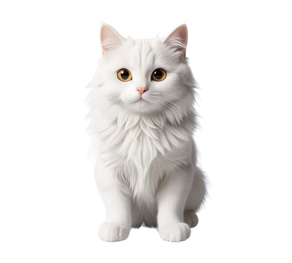
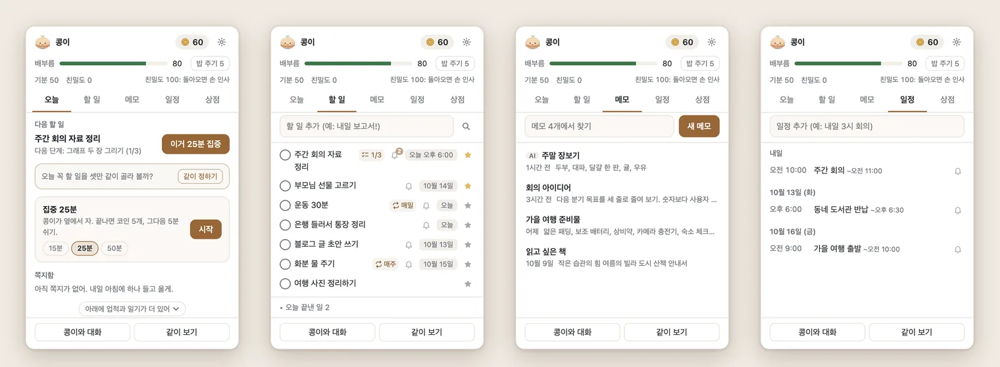
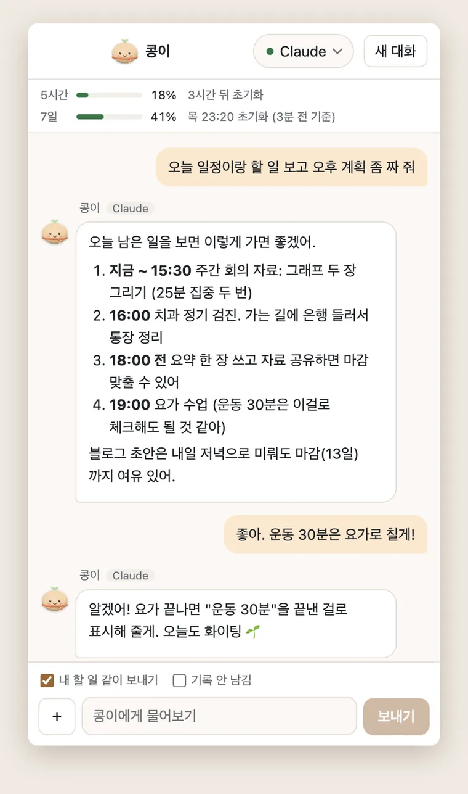
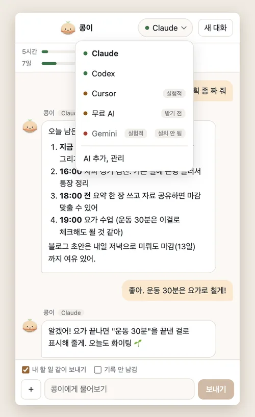
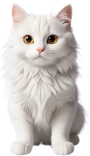
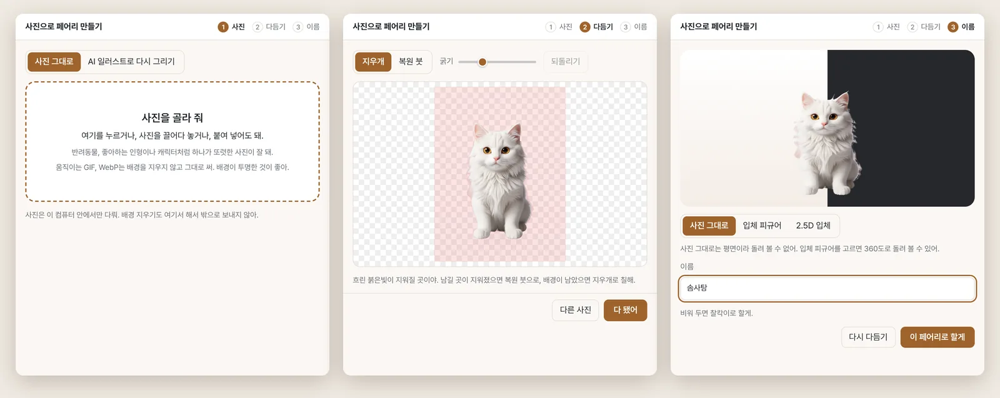
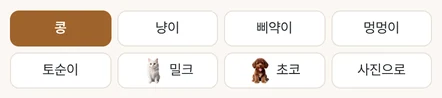

맥과 윈도우용 데스크톱 앱
화면 위에 사는
작은 페어리
화면 아래를 아장아장 걷다가, 톡 누르면 오늘 할 일과 일정을 펼쳐 줘요. 계정 없이도 내 컴퓨터 안에서 다 쓸 수 있어요.

새로 생긴 것
- 밀크와 초코 네 발 피규어설정에서 켜면 밀크와 초코가 네 발로 서서 걷고 앉고, 신나면 고양이답게, 강아지답게 굴어요. 기본은 사진 그대로예요.
- 맨 위에 고정자주 보는 메모, 할 일, 일정을 핀으로 목록 맨 위에 둬요.
- 잘 때 눈 감기밀크와 초코가 잘 때, 졸 때, 깜빡일 때 눈을 감아요.
- Milk and Choco four-legged figuresTurn it on in Settings and Milk and Choco stand, walk and sit on four legs, and play like a real cat and dog. By default they stay as their photos.
- Pin to topPin the notes, to-dos and events you check often to the top of the list.
- Eyes close in sleepMilk and Choco close their eyes when they sleep, doze or blink.
페어리는 이런 앱이에요
일하는 화면 한쪽에
페어리가 살아요
가만히 있다가 가끔 걸어 다니고, 창 위에 올라앉고, 마우스를 쳐다보고, 쓰다듬으면 하트를 띄워요. 페어리를 누르면 오늘 할 일과 일정이 담긴 패널이 열리고, 우클릭하면 AI와 대화하거나 화면을 같이 보며 물어볼 수 있어요.
- 페어리
- 저마다 이름이 있는 페어리들이에요. 우리 집 강아지나 고양이 사진 한 장으로 나만의 페어리도 만들 수 있어요.
- 비서
- 할 일, 메모, 일정, 집중 타이머, 하루 회고까지. "내일 3시 회의"처럼 한 줄만 적으면 돼요.
- AI
- 이미 쓰는 Claude Code, Codex, Cursor, Gemini CLI와 이야기해요. 없어도 괜찮아요. 내 컴퓨터 안에서만 도는 무료 AI를 받아 쓰면 돼요.
페어리
쓰다듬고, 던지고,
밥도 줘요
끌어서 옮기고, 잡았다 휙 놓으면 통통 튀어요. 좌우로 살살 문지르면 쓰다듬는 거예요. 기분과 배부름, 친밀도가 있어서 오래 안 놀아 주면 살짝 삐지기도 해요.
- 할 일을 끝내면 코인이 모이고, 그 코인으로 밥과 장난감, 집을 사 줄 수 있어요
- 모습은 피규어, 게임 캐릭터, 실사, 복슬복슬(시험), 납작한 2D 중에서 골라요
- "친구의 페어리 초대하기"로 친구 페어리를 셋까지 데려와 함께 돌아다녀요
- 전체 화면으로 일하거나 발표할 때는 알아서 숨어요
모습
같은 콩이도
모습은 여러 가지
설정의 페어리 탭에서 "입체로 보기"를 켜면 네 가지 입체 모습 중에 고르고, 끄면 납작한 2D 그림이 돼요. 사진으로 만든 페어리는 AI 일러스트나 입체 피규어로도 바꿀 수 있어요.
-
피규어
말랑한 비닐 피규어처럼 반짝여요. 처음엔 이 모습이에요.
-
게임 캐릭터
명암을 또렷하게 나누고 테두리 선을 둘러요. 눈도 조금 더 커요.
-
실사
부드러운 빛과 유리알 같은 눈으로 진짜 동물처럼 그려요.
-
복슬복슬
이음새 없는 몸에 길고 폭신한 털을 입혀요. 아직 시험판이라 다듬는 중이에요.
-
납작한 2D
"입체로 보기"를 끄면 손으로 그린 듯한 그림이 돼요. 그래픽을 가장 적게 써요.
-

AI 일러스트
사진 속 아이를 AI가 귀여운 입체 그림체로 다시 그려요. 그림 친구 밀크도 이렇게 그렸어요.
-

사진으로 만든 피규어
Claude나 Codex가 사진을 보고 몸의 설계도를 짜면, 360도로 돌려 볼 수 있는 입체 피규어가 돼요.
-
사진 페어리는 이렇게도
사진을 그대로 두거나, 사진의 깊이를 읽어 은은하게 움직이는 2.5D로 쓸 수 있어요. Gemini 앱에 사진을 올려 피규어나 일러스트로 받아 오는 길도 있어요.
비서
할 일, 일정, 메모를
패널 하나에
페어리를 누르면 오늘, 할 일, 메모, 일정, 상점 탭이 있는 패널이 열려요. 다음에 할 일과 그 단계, 바로 시작하는 집중 타이머, 오늘 일정이 한눈에 들어와요.
- 빠른 입력어디서든 단축키 한 번이면 한 줄 입력 창이 떠요. "내일 3시 회의", "매일 운동"처럼 적으면 날짜와 시각을 척척 알아들어요.
- 미리 알림기본으로 일정은 10분 전, 할 일은 하루 전과 1시간 전에 알려 줘요. 알림에서 바로 10분, 1시간, 내일 아침으로 미룰 수도 있어요.
- 집중 타이머15분, 25분, 50분 중에 골라요. 끝까지 하면 코인을 5개, 10개, 25개 받아요.
- 캘린더 가져오기구글 캘린더 같은 캘린더의
.ics비공개 주소를 넣으면 30분마다 새로 가져와요.



AI
쓰던 AI가
페어리 말투로 대답해요
페어리는 이 컴퓨터에 이미 설치해 둔 AI 프로그램을 불러 페어리 말투로 이야기해요. 하나도 없다면 내 컴퓨터 안에서만 도는 무료 AI(Qwen3)를 받아 쓰면 돼요.
- 내 할 일 같이 보내기켜 두면 "오늘 뭐부터 할까?"라고 물었을 때 내 할 일과 일정을 보고 답해요.
- 같이 보기화면 한 부분을 골라 AI에게 보여 주며 물어볼 수 있어요.
- 대신 적어 주기"내일 장보기 할 일로 넣어 줘"라고 하면 바로 넣어요(Claude, Codex). 지우거나 고칠 때는 먼저 물어봐요.
- 성격과 말투다정한 친구, 존댓말 비서, 츤데레, 차분한 선생님 중에서 골라요.
이런 것도 챙겨 줘요
- 습관 잔디반복하는 할 일을 날마다 체크하고, 최근 12주를 잔디로 봐요. 하루 빠져도 괜찮아요.
- 아침 계획꼭 할 일 셋을 고르고, 일정 사이 빈 시간에 집중할 자리를 잡아 줘요. AI 없이도 돼요.
- 함께 자라요함께한 날만큼 자라고, 계절과 명절마다 옷을 갈아입어요.
- 주간 카드이번 주 기록을 귀여운 카드 한 장으로 저장해요.
- 내보내기와 백업메모는 .md, 할 일은 .csv, 일정은 .ics로 내보내요. 폴더 하나로 다른 컴퓨터에 그대로 옮길 수도 있어요.
- 접근성말풍선을 소리 내어 읽어 주고, 키보드로도 다룰 수 있어요. 운영체제의 움직임 줄이기 설정도 따라요.
실제 화면
앱 화면을
한 장씩 넘겨 봐요
지금 앱에서 그대로 찍은 화면이에요. 할 일, 일정, 메모, 대화는 지어낸 예시예요. 화면을 누르면 크게 볼 수 있어요.
내 페어리 만들기
사진 한 장이면
우리 집 아이도 페어리가 돼요
반려동물이나 아끼는 인형 사진을 고르면 배경을 지워 줘요. 지우개와 복원 붓으로 다듬고, 모습과 이름을 정하면 끝이에요. 배경 지우기는 내 컴퓨터 안에서 해요.


- 사진 고르기
- 다듬기
- 모습과 이름
모습은 넷 중에 골라요
- 사진 그대로오려 낸 사진을 그대로 써요. 사진은 컴퓨터 밖으로 나가지 않아요.
- 2.5D 입체사진의 깊이를 읽어 숨 쉬듯 은은하게 움직여요. 이것도 내 컴퓨터 안에서 해요.
- 입체 피규어Claude나 Codex가 사진을 보고 360도로 돌려 볼 수 있는 피규어를 만들어요. 다듬은 사진 한 장만 그 AI에 보내요.
- AI 일러스트귀여운 그림체로 다시 그려요. 무료 그림 서버(Hugging Face)나 Gemini 앱, 또는 메모리 8GB 이상인 내 컴퓨터에서 그릴 수 있어요.
만든 페어리는 파일 하나(.fairy)로 친구에게 보낼 수 있어요.
개인정보
내 기록은
내 컴퓨터에
페어리는 계정 없이 내 컴퓨터에서 다 쓸 수 있어요. 할 일, 메모, 일정, 코인, 페어리, 설정은 모두 이 컴퓨터의 사용자 데이터 폴더에 저장돼요. 서버 기능(계정, 서버 코인, 친구와 선물, 서버 백업, 채팅 이용권)은 선택이에요. 켜는 사람만 쓰고, 만 14세 미만은 켤 수 없어요. 서버 기능은 순서대로 열려요.
이 컴퓨터에만 남는 것
- 할 일, 메모, 일정, 일기, 코인과 페어리 상태, 페어리가 기억하는 것
- 채팅 창의 최근 대화 40개 (붙인 그림은 빼고)
- 사진 페어리 배경 지우기, 2.5D 깊이 재기, 무료 AI 대화, 내 컴퓨터에서 그리기
- 구글 캘린더와 Hugging Face 토큰. 되는 곳에서는 운영체제 보안 저장소로 암호화해요
- 진단 기록. 질문, 답, 할 일과 일정 제목은 남기지 않아요
같이 보기로 찍은 화면은 디스크에 저장하지 않아요. 화면이나 그림을 실은 질문은 Claude Code와 Codex가 자기 대화 기록에도 남기지 않게 불러요. 보낸 그림은 그 AI 회사의 보관 정책을 따라요.
밖으로 나가는 것 그 기능을 쓸 때만요
| 기능 | 어디로 | 무엇이 |
|---|---|---|
| AI 대화, 같이 보기 | 내가 고른 AI 프로그램이 연결된 곳 (Anthropic, OpenAI, Cursor, Google) | 질문과 고른 화면 그림. 페어리 이름과 성격, 허락한 기억이 같이 가요. "내 할 일 같이 보내기"를 켜면 안 끝낸 할 일 제목과 마감, 오늘 남은 일정 제목도요 |
| 메모 요약, 다듬기, 할 일로 쪼개기 | 내가 고른 AI | 그 메모 글 (일부만 골랐다면 그 부분만) |
| 일기를 AI로 다듬기 | 내가 고른 AI | 그날 숫자와 페어리가 쓴 일기 문장. 할 일 제목은 보내지 않아요 |
| 입체 피규어 만들기 | Claude 또는 Codex | 다듬은 사진 한 장 |
| AI 일러스트 (무료 서버) | Hugging Face의 무료 그림 서버 (다른 사람이 운영) | 고른 사진과 바라는 점, 토큰을 넣었다면 그 토큰 |
| 캘린더 가져오기 | 내가 넣은 .ics 주소 | 보내는 것 없이 받아 오기만 해요 |
| 구글 캘린더 연결 | 구글 캘린더 API (연결했을 때만) | 페어리에서 넣은 일정의 제목, 시각, 알림을 보내고, 고른 캘린더 일정의 제목과 시각을 읽어 와요 |
| 모델과 도구 받기 | GitHub, Hugging Face, jsDelivr, unpkg, PyPI 등 | 보내는 것 없이 받아 오기만 해요 |
| 업데이트 확인, 모델 목록 | GitHub | 앱 이름과 버전만 |
이 사이트도 쿠키나 방문 추적을 쓰지 않아요. 최신 버전을 확인하려고 GitHub에 한 번 물어보는 게 전부예요.
시작하기
세 걸음이면 돼요
-
받아서 열기
내 컴퓨터에 맞는 파일을 받아 열어요. 처음 한 번만 경고를 넘기면 돼요.
-

페어리 고르기
이름을 지어 주고, 콩이나 냥이, 밀크, 초코 같은 페어리 중에서 골라요. 사진으로 직접 만들어도 좋아요.
-
화면에서 같이 지내기
화면 아래를 걸어 다니다가, 일정이 다가오면 말풍선으로 알려 줘요.
받기
내 컴퓨터로 데려오기
무료예요. 아직 애플과 마이크로소프트의 개발자 서명을 받기 전이라 처음 열 때 경고가 한 번 떠요. 넘기는 법은 아래 자주 묻는 질문에 있어요.
필요한 것과 크기
- 맥
- macOS 13(Ventura) 이상. Apple 칩(M1 이후)과 Intel 둘 다
- 윈도우
- Windows 10 이상, 64비트(x64). ARM 윈도우는 아직 지원하지 않아요. 윈도우판은 아직 확인하는 중이라 거친 데가 있을 수 있어요
- 리눅스 (시험판)
- x64. 데스크톱 환경(X11 또는 Wayland)과 투명 창이 되는 컴포지터
- 설치 파일
- 리눅스는 tar.xz 약 89MB, AppImage 약 101MB예요. 맥과 윈도우 크기는 첫 릴리스가 나오면 받기 단추 옆에 보여요.
- 디스크
- 앱 약 310MB (리눅스 0.1.0을 푼 크기 기준)
- AI 대화
- Claude Code, Codex, Cursor, Gemini CLI 중 하나, 또는 무료 AI 모델(Qwen3 1.7B 약 940MB, 0.6B 약 400MB). 없어도 페어리, 할 일, 메모, 일정은 다 돼요.
- 쓸 때만 받는 것
- 사진 페어리 배경 지우기 모델 약 170MB와 엔진 약 17MB, 2.5D 깊이 모델 약 27MB, 무료 AI 엔진 5~11MB
- 내 컴퓨터에서 그리기
- 메모리 8GB 이상, 빈 공간 7~20GB (엔진에 따라 약 5.2GB 또는 약 16GB를 받아요)
자주 묻는 질문
무료인가요?
네, 앱은 무료이고 회원 가입도 없어요. Claude Code 같은 AI 프로그램과 이야기할 때는 그 프로그램의 요금제와 사용량을 따르고요. 무료 AI와 "사진 그대로" 페어리 만들기에는 돈이 들지 않아요.
좋아하는 캐릭터로 페어리를 만들어도 되나요?
AI가 연결돼 있으면 "말로 만들기"에 좋아하는 캐릭터 이름을 적어 만들 수 있어요. 다른 사람의 캐릭터를 닮게 만든 페어리는 개인적으로 즐겨 주세요. 팔거나 널리 퍼뜨리지는 말아 주세요. 권리자 요청이 오면 그에 맞게 조치해요.
내 할 일이 밖으로 나가지는 않나요?
맥에서 "악성 코드가 없음을 확인할 수 없습니다" 창이 떠서 안 열려요
아직 애플 개발자 서명 전이라 처음 한 번 떠요. macOS 15(Sequoia) 이상 기준이에요.
- dmg를 열고 fairy를 응용 프로그램 폴더로 끌어 넣어요.
- 응용 프로그램 폴더에서 열고, 경고 창이 뜨면 완료를 눌러요. 휴지통으로 옮기지 마세요.
- 시스템 설정 → 개인정보 보호 및 보안 → 아래쪽 "보안" 칸에서 그래도 열기를 누르고 맥 암호를 넣어요.
- 다시 뜨는 창에서 그래도 열기를 누르면 화면에 페어리가 나와요.
이전 macOS에서는 앱을 우클릭해 "열기"를 눌러도 돼요. 그래도 안 열리면 터미널에서 아래 한 줄을 실행하고 다시 열어요. 인터넷에서 받은 파일 표시를 지우는 명령이에요.
xattr -dr com.apple.quarantine /Applications/fairy.app"손상되었기 때문에 열 수 없습니다" 창이 떠도 휴지통으로 옮기지 말고 취소를 누른 뒤 위 명령을 실행해요.
새 버전을 홈페이지에서 직접 받아 다시 설치했다면 이 창이 한 번 더 떠요. 같은 방법으로 열면 되고, 그 뒤로는 페어리 안의 "다시 켜서 업데이트"로 바뀌어요.
dmg 안에서 바로 열지 말고 꼭 응용 프로그램 폴더로 옮긴 뒤 열어 주세요. 그래야 자동 업데이트가 돼요.
윈도우에서 "Windows의 PC 보호" 파란 창이 떠요
서명이 없는 새 앱이라 SmartScreen이 띄우는 창이에요. 추가 정보를 누르면 보이는 실행을 눌러요. 관리자 권한 없이 바로 설치되고 페어리가 나와요.
회사 컴퓨터에서 "실행" 단추 없이 막힌다면 관리자가 막아 둔 거라, 서명한 판이 나올 때까지는 설치할 수 없어요.
어떤 컴퓨터에서 쓸 수 있나요?
macOS 13(Ventura) 이상의 맥(Apple 칩과 Intel 둘 다)과 Windows 10 이상의 64비트 PC에서 써요. 윈도우판은 아직 확인하는 중이고, 리눅스 x64는 시험판이에요. ARM 윈도우는 아직 지원하지 않아요. 자세한 크기는 필요한 것과 크기에 있어요.
Apple 칩인지 Intel인지 모르겠어요
화면 왼쪽 위 사과 메뉴 → 이 Mac에 관하여에서 "칩"이 Apple M으로 시작하면 Apple 칩이에요. "프로세서"에 Intel이라고 쓰여 있으면 Intel이에요.
AI 프로그램이 하나도 없어도 쓸 수 있나요?
네. 페어리, 할 일, 메모, 일정은 AI 없이 다 돼요. 대화하고 싶으면 채팅 창의 AI 고르기에서 "무료 AI"를 고르세요. 처음 한 번 모델을 받고, 그다음엔 인터넷 없이 이 컴퓨터 안에서만 돌아요. 큰 AI보다 답이 짧고 단순해요.
페어리가 작업을 가려요
페어리 위에서 휠을 그냥 굴리면 아래 창으로 넘어가요. 단축키로 잠깐 숨기거나, 설정 → 페어리에서 "가끔 돌아다니기"를 끄고 크기를 줄여 보세요. 발표나 화면 공유 중에는 저절로 숨어요.
업데이트는 어떻게 해요?
맥과 윈도우는 새 버전을 미리 받아 두고 페어리가 "다시 켜서 업데이트"를 띄워요. 누를 때만 설치해요. 리눅스는 페어리가 릴리스 페이지를 열어 줘요. 설정 → 정보에서 새 버전 알림을 끌 수 있어요.
리눅스에서도 되나요?
시험판이에요. tar.xz는 tar xJf로 풀어서 안의 fairy를 실행하고, AppImage는 실행 권한(chmod +x)을 주고 실행해요. 배포판에 따라 libfuse2가 필요해요. 같이 보기와 창 위에 올라앉기는 데스크톱 환경에 따라 안 될 수 있어요.
예전 이름인 짝꿍을 쓰고 있었어요
페어리는 짝꿍의 새 이름이에요. 짝꿍을 끄고 페어리를 처음 켜면 할 일, 메모, 설정 같은 데이터를 저절로 옮겨 와요. 그다음엔 짝꿍 앱을 지워도 돼요. 예전 .jjpet 파일도 그대로 열려요.
지우려면요?
맥은 응용 프로그램 폴더에서 fairy를 휴지통으로, 윈도우는 설정 → 앱 → 설치된 앱에서 제거해요. 앱을 지워도 할 일과 페어리는 남아서 다시 설치하면 이어서 써요. 완전히 지우려면 데이터 폴더도 지워요.
- 맥
~/Library/Application Support/fairy - 윈도우
%APPDATA%\fairy - 리눅스
~/.config/fairy